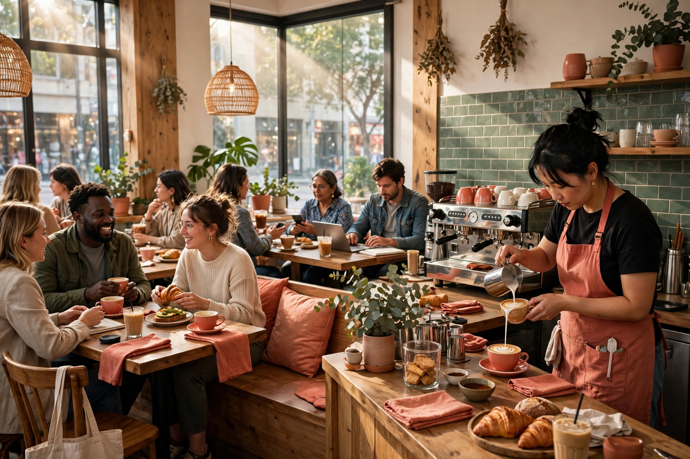
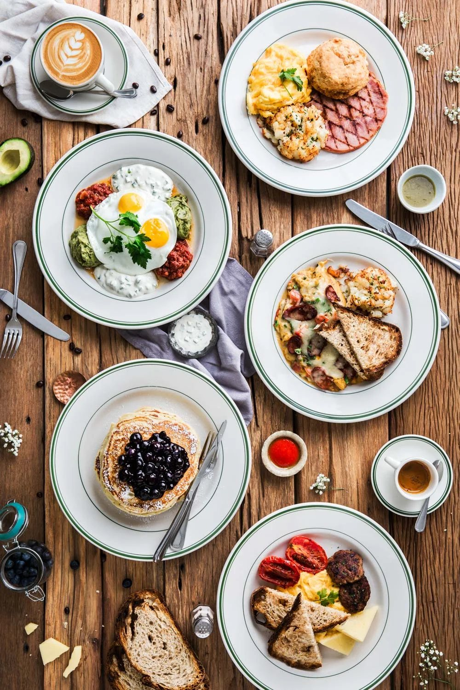

Cafés & restaurants
Brunch tables, new menus and weekend specials — posted by foodies whose followers actually live nearby.
BrunchNew menuWeekend rush
LocalCreators is nano influencer marketing in Australia, built for small business: one flat bundle of 10 local nano creators (1,000–10,000 followers) matched to your suburb. No agency retainer. No $5,000 contest minimum. Just locals, posting.
Free to join the waitlist. We'll email you once the app is ready — no spam, no lock-in.
Influencer marketing for small business in Australia has meant agency retainers or global platforms priced in USD. LocalCreators is priced for businesses like yours — starting with Sydney's local favourites.

Brunch tables, new menus and weekend specials — posted by foodies whose followers actually live nearby.

Before-and-afters and honest reviews from local beauty creators your next client already follows.

Trial-week content, class reviews and transformation stories from fitness creators in your catchment.

New drops, try-ons and gift guides from neighbourhood style creators — not offshore influencers.
A step-by-step wizard walks you through it in about five minutes — pick your suburb, write one simple brief, and your bundle posts.
Choose where your customers live and how many creators you want. We match nano creators whose audiences are concentrated in your area.
Tell them what to post — a new menu item, a trial class, a Saturday sale. Every creator gets the same simple brief and the disclosure rules built in.
Watch views, engagement and redemptions in one dashboard. Posts are checked for #ad disclosure before they count toward your bundle.
Nano creators are locals whose followers know them by name. The research is clear — and it's why one nano on their own is a weak buy, but a bundle of ten is a strategy.
Posted is a good platform — for brands with enterprise budgets. Its own help centre lists a $500/month subscription and a $5,000 contest minimum (October 2026). Here's the honest maths for a Sydney small business.
A bundle of 10 local nano creators matched to your suburb — everything handled for you.
Global creator app priced for bigger brand budgets.
Managed service — real expertise, priced for bigger launches.
Posted pricing: Posted help centre, updated October 2026. The agency card reflects typical managed-service arrangements, not a single named agency.
Every bundle ends with a leaderboard ranked by local views — friendly competition for creators, and a clear view of what your spend delivered. Filter by category to see who's performing near you.
Example leaderboard — LocalCreators launches soon, and live rankings will be published from real campaigns.
Every LocalCreators creator is a real local with 1,000–10,000 followers and an audience concentrated in their own neighbourhood. Tap any creator to see their full card.
Creator profiles shown are illustrative examples of the local nano creators the platform is built for.
Audience matching works at suburb level — because a Glebe local doesn't drive to Cronulla for brunch. Pick your suburb to see what a bundle could look like there.
Dense café scene, brunch-obsessed locals, creators within walking distance of Crown Street.
*Illustrative estimates for preview purposes — live figures publish at launch.
One flat monthly price. No contest minimums, no per-post haggling, no lock-in. This is what affordable influencer marketing in Australia should have cost all along.
For cafés, salons and shops getting their first local buzz.
For businesses ready to own their neighbourhood's feed.
No subscription. Buy a one-off bundle whenever you need a push.
Prices in AUD. Final bundle composition confirmed at launch; waitlist members lock in founding pricing.
Straight answers on nano influencer marketing in Australia — costs, tactics and local playbooks, with the research cited.
 Start here
Start hereWhat nano creators are, why their 2.1% median engagement beats mega creators, and how Australian small businesses can actually buy this — without enterprise budgets.
Read the guide → Sydney
SydneyWhere Sydney's UGC creators actually are, what suburb-level matching means, and the brief format that gets posts published on time.
Read the guide →
HospitalityThe hospitality playbook: brunch content that fills tables, launch weeks, and why local foodie nanos outperform one big food account.
Read the guide → PricingReal numbers: the $110 median nano post, the $636 micro comparison, platform fees — and what a fair monthly bundle should cost a small business.
Read the guide →Join the waitlist and we'll be in touch once the app is ready. Founding businesses lock in $79–$99 pricing for their first year.
Free to join · No card required · Unsubscribe anytime
Nano influencer marketing in Australia is the practice of working with creators who have 1,000–10,000 followers — real locals whose audiences are concentrated in a suburb, a school community, a gym, or a scene. For years, influencer marketing for small business in Australia effectively meant two bad options: pay an agency a retainer you couldn't justify, or DM creators yourself and hope. Nano marketing, bought properly as a bundle, is the third option — and the research says it may be the best one.
Creator tiers are usually defined by follower count: nano (1K–10K), micro (10K–100K), macro (100K–1M) and mega (1M+). Follower count is a reach number, not a trust number. A nano creator's audience is mostly people who know them, live near them, or share their specific interest — a Marrickville mum who posts playground-friendly cafés, a Newtown trainer who posts 5am workouts. When that person recommends your business, it lands like a word-of-mouth tip, because structurally, it is one.
The numbers back this up. In Virev's 2026 study of 391,731 Instagram creators, nano creators recorded a median engagement rate of 2.1% — double the micro median of 1.0% and more than four times the mega median of 0.5%. Engagement is the share of an audience that actually likes, comments, saves and shares. A mega creator may reach more screens; a nano creator reaches more people who act.
Any honest guide to nano influencer marketing in Australia has to say this plainly: a single nano creator is a gamble. The same research shows half of nano sponsored reels received under 2,100 views. Nano audiences are small, and small audiences are variable. If you pay one nano creator and the post underperforms, you have spent money to learn nothing.
That is exactly why the unit of purchase matters. Ten nano creators posting about your business in the same week is not ten separate gambles — it is a portfolio. Some posts will be quiet. A few will travel. All ten put your name in front of overlapping local audiences repeatedly, which is how local awareness actually forms. The bundle converts nano marketing from a lottery ticket into a channel.
Australia has 2.66 million small businesses (ABS Counts of Australian Businesses, June 2025) — cafés, salons, gyms, boutiques, tradies and local services that live or die on their catchment area. A café in Surry Hills gains nothing from a follower in Perth. Global platforms optimise for country-level reach; Australian small businesses need suburb-level relevance. That mismatch is the whole opportunity.
It is also why pricing matters. The global platforms that dominate this category were built for bigger brands: Posted, for example, charges a $500/month subscription with a $5,000 minimum for its contests (Posted help centre, October 2026). That is rational pricing for a US brand team. It is a non-starter for a two-person salon in Balmain. Affordable influencer marketing in Australia has to start under $100 a month, in AUD, with no minimum campaign spend — which is precisely the gap LocalCreators is built to fill.
Start with one clear offer, not your whole menu or service list: the new winter menu, a trial week, a Saturday sample sale. Give creators a genuine reason to visit and something specific to show. Keep the brief simple — what to post, when, and the one thing to mention — and let creators shoot in their own style, because their style is what their audience trusts.
Timing matters locally. Concentrate posts in a single week so the suburb sees your name repeatedly in a short window; scattered posts across a month rarely build the same recognition. Track views, engagement and — most importantly — redemptions: a code word at the counter, a "mention this post" offer, or a booking link. Views tell you about reach; redemptions tell you about revenue.
Sponsored content in Australia must be disclosed, and regulators are enforcing it — the ACCC issued its first financial penalty for influencer disclosure failures in 2026. Every post in a LocalCreators bundle is briefed with #ad and Paid Partnership tagging, and checked before it counts toward your bundle. If you run nano campaigns yourself, hold the same line: disclosure is not a growth hack risk, it is a legal requirement and a trust signal to customers who can smell an undisclosed ad instantly.
The median sponsored nano post costs $110, versus $636 for a micro creator (Virev 2026). Bought individually with your own time spent finding, vetting and chasing creators, a ten-creator month can quietly cost far more in hours than in fees. A flat bundle — LocalCreators starts at $79/month for ten suburb-matched creators — trades that admin for a predictable line item. We break the full maths down in how much nano creators cost in Australia.
If you run a Sydney café, start with our hospitality playbook on influencer marketing for cafés and restaurants. If you want to understand the creator side, read how businesses find and brief UGC creators in Sydney. And if you'd rather have the bundle assembled for you — suburb matching, briefs, disclosure checks and a results leaderboard included — join the LocalCreators waitlist below. We're launching soon in Sydney, suburb by suburb.
Join the LocalCreators waitlist — launching soon in Sydney. We'll be in touch once the app is ready.
Join the waitlist
Search for UGC creators in Sydney and you'll find agencies, global marketplaces and a lot of noise. What a Sydney café, salon or boutique actually needs is simpler: local people, with local audiences, who will walk into your business this week and post content their neighbours trust. This guide covers where those creators are, how to judge them, and the brief format that gets content published on time.
UGC — user-generated content — originally meant content a brand could license and run on its own channels: a creator films a video, you post it as your ad or on your page. Influencer posts are published on the creator's own account, to their audience. For a Sydney small business, the creator's own post usually matters more: their followers are your catchment. The strongest bundles combine both — posts on creator accounts for reach and trust, with reuse rights so the best content can run on your own channels afterwards. When you hire micro influencers in Sydney or work with nanos, be explicit about which you're buying, because the price and the value differ.
They are rarely on a stage at a creator conference. They are the regular who films every brunch in the Inner West, the trainer posting form checks to 4,000 followers, the beauty enthusiast whose "POV: getting my hair done in Parramatta" reels reliably pull comments from locals asking for the salon's name. You find them through suburb and niche hashtags, location tags on posts from businesses like yours, and the comments of your own customers.
The manual version of this search works — once. Doing it every month, vetting follower quality, negotiating rates in DMs, chasing late posts and checking disclosure is a part-time job. That admin burden, not creator supply, is the real reason most small businesses try UGC once and stop. Platforms like LocalCreators exist to absorb exactly that work: suburb-matched bundles, one brief, disclosure checked, results in one dashboard.
Good briefs are short. Cover five things: the one offer or product to feature; the visit window (give a week, not a day); the format (one Reel plus Stories is the local standard); the must-mentions (your handle, suburb, and the redemption hook); and the disclosure requirement (#ad, Paid Partnership tag). Then stop writing. Over-scripted briefs produce ads that audiences scroll past; the creator's own voice is the entire point of nano and UGC marketing. For the strategy behind this, see our guide to nano influencer marketing in Australia.
The median sponsored nano post is $110, and a micro post is $636 (Virev 2026) — but Sydney businesses buying one-off UGC videos through agencies or global marketplaces often pay well above the nano median once fees and management are added. Bundled local buying changes the maths: ten suburb-matched nano creators from $79/month is the LocalCreators model, and we unpack every line item in how much nano creators cost in Australia.
Food content is the most naturally shareable local content there is, which is why cafés and restaurants lead Sydney's creator economy — our dedicated playbook on influencer marketing for cafés and restaurants in Australia covers launch weeks, menu drops and redemption tracking in detail. But the same mechanics work for salons (transformations), gyms (trial weeks) and boutiques (new drops): a specific offer, a concentrated week, local voices.
You can absolutely run this manually for your first campaign — many businesses should, to learn what good looks like. When the admin starts eating the hours the campaign was meant to save, a bundle platform is the upgrade. LocalCreators is launching soon in Sydney with suburb-level matching across the Inner West, Eastern Suburbs, North Shore, Hills and the West. Join the waitlist and we'll match your suburb as soon as your area opens.
Join the LocalCreators waitlist — 10 suburb-matched creators, one brief, from $79/mo. Launching soon in Sydney.
Join the waitlistInfluencer marketing for cafés and restaurants in Australia works when it is local, visual and timed — and fails expensively when it is none of those. A national food account with 800,000 followers might deliver a lovely post and zero extra covers, because almost none of those followers can walk through your door. This playbook is about the opposite approach: small local creators, posting in the same week, to audiences who live within a short drive of your tables.
Food is the most photographed everyday experience in Australia, and café culture is a neighbourhood ritual. The people posting it best are nano creators — locals with 1,000–10,000 followers whose brunch content is essentially a running recommendation list for their friends. The data supports the instinct: nano creators record a median engagement rate of 2.1%, versus 0.5% for mega creators (Virev 2026 study of 391,731 Instagram creators). For a venue, engagement is not vanity — comments like "we're going Saturday" are intent.
Hospitality is also a volume business with thin margins, which rules out the traditional influencer playbook. Posted charges $500/month with a $5,000 contest minimum (its help centre, October 2026); agency retainers sit in the same territory. A café doing 200 covers a day cannot amortise that. Influencer marketing for cafés in Australia only pencils out at small-business prices — flat bundles under $100 a month, like LocalCreators, or gifted visits you organise yourself.
The launch week. New venue, new menu, new chef — concentrate ten local creators into your first seven days. The suburb's feeds fill with your food simultaneously, which reads as "everyone's talking about this place," because locally, they are.
The signature dish push. One photogenic, only-you item — the dish people cross a suburb for. Brief every creator to feature it. Repetition of a single item builds the association that drives trial.
The quiet-period fix. Tuesday lunches dead? A midweek bundle with a specific offer ("locals' lunch, mention this post") targets the exact dayparts you need, with a redemption hook you can count at the till.
The seasonal moment. Vivid, Mother's Day, winter warmers, summer spritz season — local creators ride the same calendar your customers live by.
Feed them properly, seat them in your best light, and let the food arrive as it would for any guest — audiences can tell a staged plate from a real one. Your brief needs: the hero dish, the offer or booking detail, your handle and suburb, posting window, and the disclosure requirement (#ad and Paid Partnership — the ACCC has begun fining disclosure failures, and venues share the reputational risk). Then let them shoot their way. The full briefing framework is in our guide to UGC creators in Sydney.
Views and engagement tell you the content travelled; hospitality needs one more step. Attach a countable action to every campaign: a mention-this-post offer, a booking link with a tag, a QR code on the table tent that creators show in their Stories. Count redemptions weekly and compare against your quiet baseline. A bundle that delivers 40,000 local views is nice; a bundle that delivers 60 extra covers on a Saturday is a marketing channel you'll renew. This discipline is also what separates nano bundles from one-off influencer splurges — read the strategy in nano influencer marketing in Australia.
Gifted visits (free meals for posts) are hospitality's tradition, and for a first experiment they cost you only food cost. But gifted-only arrangements attract whoever says yes to free food, not necessarily the creators whose audiences convert — and reliability drops when nothing is at stake. Paid bundles, even modest ones, buy you scheduling, briefing rights and delivery standards. Many venues land in the middle: a paid bundle for launch moments, gifted relationships with two or three favourite regulars the rest of the year. Either way, disclosure applies equally — a gifted meal is still a benefit that must be declared.
The median sponsored nano post costs $110 (Virev 2026). Ten individual negotiations could therefore run past $1,000 in fees alone, before your time. Bundled pricing exists precisely to collapse that: LocalCreators' hospitality bundles start at $79/month for ten suburb-matched creators. We compare every buying route — DIY, agencies, global platforms, bundles — in how much nano creators cost in Australia.
Week one: pick the offer and the week. Week two: creators visit and post; reply to every comment on their posts from your venue account — that engagement is free and it converts. Week three: count redemptions, repost the best content on your own channels (with permission), and thank the creators publicly. Week four: decide with numbers, not vibes, whether to renew, scale suburbs, or change the offer. That rhythm — specific offer, concentrated week, counted redemptions — is the entire playbook. Everything else is decoration.
Join the LocalCreators waitlist — 10 local foodie nano creators matched to your suburb, from $79/mo. Launching soon in Sydney.
Join the waitlistAsk how much nano creators cost in Australia and you'll get answers ranging from "a free coffee" to numbers that belong in an enterprise media plan. This guide sticks to published research and published platform pricing, so you can budget with real figures: what a nano post costs at the median, what the platforms add on top, and what the DIY route really costs once your own time is counted.
The best current dataset is Virev's 2026 study of 391,731 Instagram creators. Its medians: a sponsored nano post costs $110; a sponsored micro post costs $636. Nano creators also deliver a median engagement rate of 2.1%, against 1.0% for micro and 0.5% for mega creators. Read together, those two facts are the entire economic case for nano: roughly a sixth of the micro price, with double the engagement rate. It is why affordable influencer marketing in Australia is being rebuilt around nano bundles rather than single bigger names.
Medians are not quotes, though. A nano creator with a hyper-local, high-trust audience in a wealthy catchment can fairly charge above $110; a newer creator building a portfolio may charge less or accept product plus a smaller fee. Rates also move by niche — beauty and fitness creators with proven conversion history sit at the top of the nano band; general lifestyle creators sit lower.
Buying directly, ten nano posts at the median is about $1,100 in creator fees. But the invoice is the smallest part of DIY. Finding creators suburb by suburb, checking their engagement is real, negotiating in DMs, briefing, scheduling, chasing late posts, verifying disclosure and paying ten separate invoices routinely consumes 8–15 hours for a first campaign. If your time is worth anything — and as a business owner it is your scarcest input — DIY is often the most expensive route wearing the cheapest costume. It remains a fine way to run a first experiment and learn your market; our Sydney UGC guide shows how to do it well.
Marketplaces add platform fees and subscriptions on top of creator rates, and price for larger brands. Posted — the category's best-known app — charges a $500/month subscription, and its signature contests carry a $5,000 minimum prize pool (Posted help centre, October 2026). Other global platforms bundle similar subscription-plus-fee structures, usually in USD, with no suburb-level matching for Australian businesses. For a brand team spending five figures monthly, these costs are rounding. For a café, salon or boutique, the subscription alone can exceed the entire sensible budget — before a single creator is paid.
Australian agencies deliver managed campaigns — strategy, creator management, reporting — priced as retainers or campaign fees that reflect that labour. For a launch with real stakes, that can be money well spent. For an always-on local presence at small-business scale, agency economics rarely survive contact with a café's marketing budget. The honest summary: agencies sell expertise by the month; small businesses need posts by the week.
A bundle platform aggregates demand: many small businesses buying the same operational machinery — suburb matching, vetting, briefing, disclosure checks, payouts, reporting — so the per-business cost of that machinery collapses. That is how LocalCreators prices ten suburb-matched nano creators at $79/month (Starter) or $99/month (Growth), with a pay-as-you-go option and no minimum campaign spend. The trade-off to understand: bundle creators are booked as a matched set rather than hand-picked individually, and founding-stage platforms launch suburb by suburb rather than everywhere at once. For most small businesses, that trade is overwhelmingly worth it. The strategy behind bundles is covered in nano influencer marketing in Australia, and the hospitality version in influencer marketing for cafés and restaurants.
"Free product for a post" prices the post at your product's cost — attractive, and sometimes appropriate for a first trial. Two cautions. First, gifted arrangements still require disclosure; a benefit is a benefit. Second, gifted-only recruitment selects for availability, not audience quality, and delivery reliability is noticeably lower. Treat gifting as a sampling tool, not a pricing strategy.
For a Sydney small business testing this channel properly: one bundle month to learn ($79–$99), a small redemption incentive in your offer (a locals' special costs you margin only when it works), and one hour a week engaging with the posts. Judge it on redemptions and repeat local reach, not on any single post's views — remember, half of individual nano reels land under 2,100 views, which is precisely why the bundle, not the post, is the unit to evaluate. If the quarter shows cost-per-redemption beating your other local channels, scale suburbs before you scale spend.
Nano creators cost a median $110 a post bought one by one, $500/month-plus before you start on platforms built for bigger brands, or $79/month as a suburb-matched bundle built for Australian small businesses. The right route depends on your time and stakes — but the era of "influencer marketing isn't for businesses like ours" is a pricing artefact, and the pricing has changed.
Join the LocalCreators waitlist — 10 local nano creators, suburb-matched, disclosure checked. Launching soon in Sydney.
Join the waitlistIllustrative example profile.